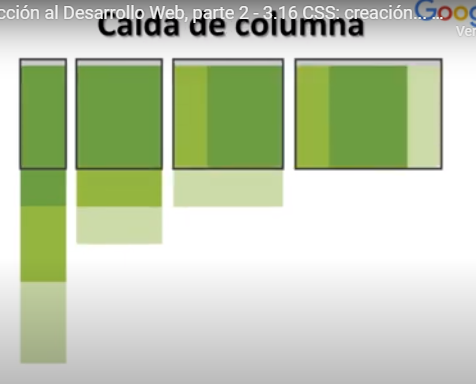

| Relativo |
Recuerda siempre usar medidad relativas y nunca fijas |
| Unidades de medida como "%" y "em" |
Se debe de usar unidades de medida como por ejemplo "%" para la anchura y "em" para los tamaños de textos |
| Casi fluido |
Consiste en reducir el ancho de los elementos de la pagina hasta que ya no se pueda mas |
|
| Caida de columna |
Consiste en poner las columnas una debajo de otra hasta que solo quede una sola columna |
 |
| Cambio de la Estructura |
Consiste en cambiar de diseño para cada situacion contemplada |
|
| Pequeños cambios |
Pequeños ajustes que se realizan a algunos elementos de la pagina, por ejemplo una columna |
 |
| Fuera de la pantalla
| Solicita a algunos elementos que no aparecen en la pantalla que salgan a escena presionando un boton o un link |
|